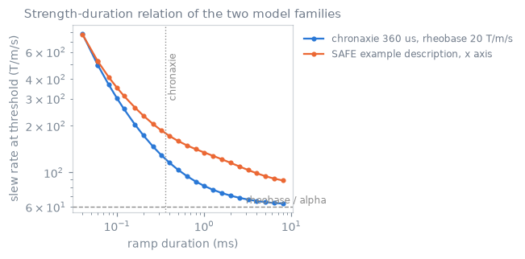
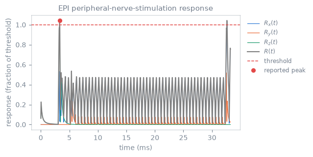

Peripheral nerve stimulation#
TL;DR
check_pns()estimates the response to the physical-axis slew waveforms for a supplied demonstration or scanner-specific coil model. A passing estimate does not establish scanner or patient safety.For a rectangular stimulus of duration \(\tau\), the chronaxie model gives the threshold \(S(\tau) = S_{\mathrm{rh}}(1 + c/\tau)\), with rheobase \(S_{\mathrm{rh}}\) and chronaxie \(c\). Shorter transitions require a larger stimulus.
ChronaxieModeluses one set of coefficients for the three axes; a SAFE model, read byread_safe_model(), has coefficients per axis.The axis responses combine as the root-sum-square \(R(t) = \sqrt{R_x(t)^2 + R_y(t)^2 + R_z(t)^2}\), and the estimated threshold is \(R = 1\). The whole sequence is evaluated, because model state depends on preceding slew history.
With a common-axis chronaxie model, rotation redistributes axis components without changing their root-sum-square. SAFE coefficients differ by physical axis, so prescription orientation can change the estimate.
Time-varying gradients induce electric fields that can stimulate peripheral
nerves. check_pns() estimates the response to the
physical-axis slew waveforms for a supplied demonstration or scanner-specific
coil model. A passing estimate does not establish scanner or patient safety.
Strength-duration relation#
For a rectangular stimulus of duration \(\tau\), the chronaxie model gives the threshold
where \(S_{\mathrm{rh}}\) is the rheobase and \(c\) is the chronaxie.[1]

Slew rate at unity response for a demonstration chronaxie model and the PyPulseq SAFE example hardware description. Shorter transitions require a larger stimulus.#
Model |
Coefficients |
Typical source |
|---|---|---|
Common chronaxie, rheobase, and geometry factor for the three axes |
Explicit demonstration or measured coil parameters |
|
SAFE |
Three exponential terms, amplitude scale, and stimulation limit per axis |
Scanner hardware description read by |
Sequence response#
Each physical-axis slew waveform drives its corresponding model response. The combined response is the root-sum-square
and the estimated threshold is \(R=1\). The trace below is returned directly by
check_pns(..., trace=True) for a short-echo-spacing EPI sequence and a clearly
synthetic chronaxie model; it does not describe a particular scanner.

Axis responses, combined response, threshold, and reported peak for one EPI acquisition. The checker computes every plotted response.#
The check evaluates the whole sequence because model state depends on preceding slew history. With a common-axis chronaxie model, rotation redistributes axis components without changing their RSS. SAFE coefficients differ by physical axis, so prescription orientation can change the estimate.
See also#
check_pns()— checker and diagnostic trace.Slew rate — hardware slew-rate limit.
Constraint checks — constraint-checking workflow.